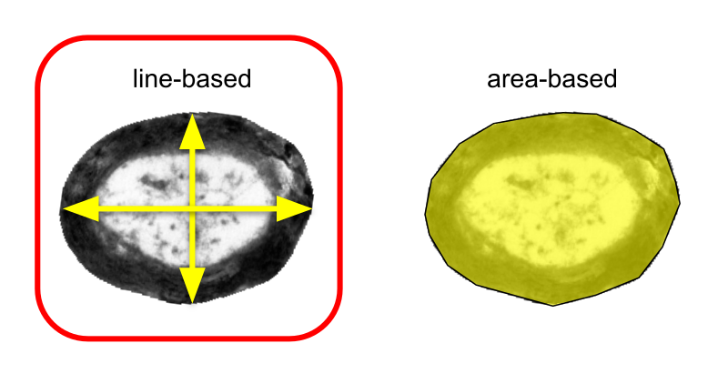
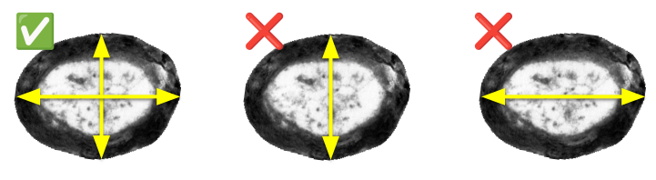
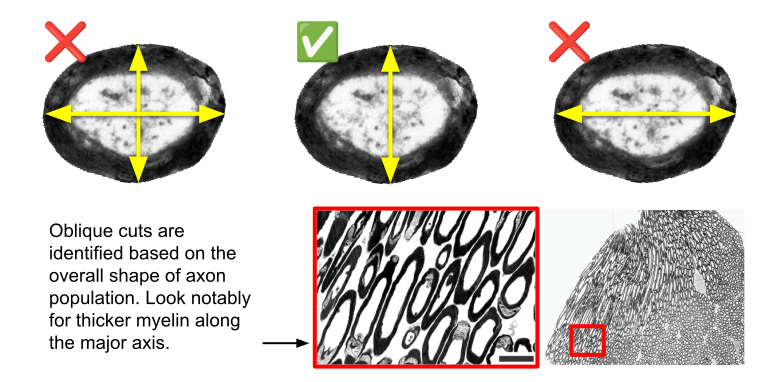
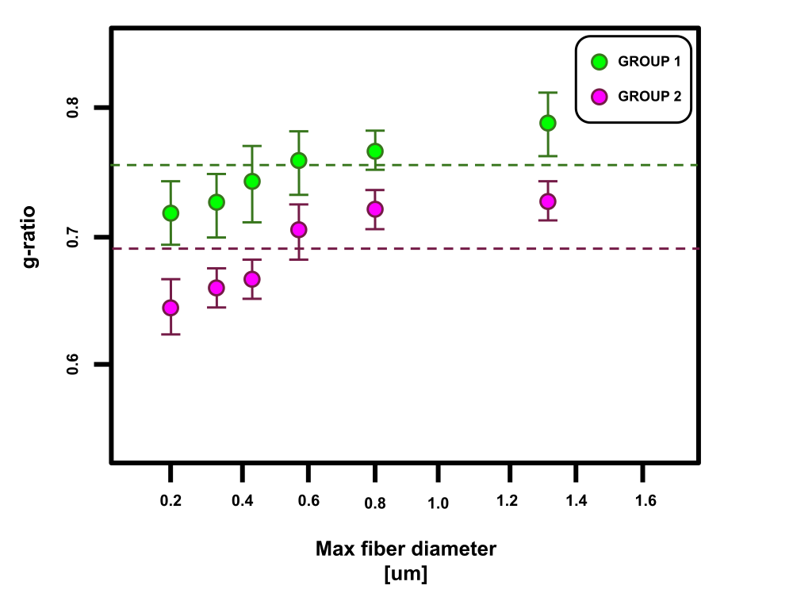

Line-based measurements are acceptable to quantify the g-ratio manually.

For axons that are not obliquely cut, an average of at least two axes is required to estimate the diameter.

For axons identified as oblique cuts, the diameter should be measured with a single line along the shortest axis.

Group comparisons of g-ratio measurements should be stratified by axon diameter (e.g., via a defined binning strategy or scatter analysis).
